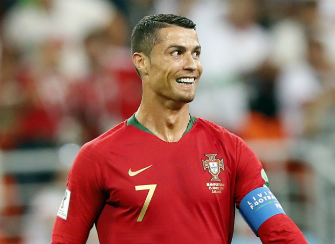
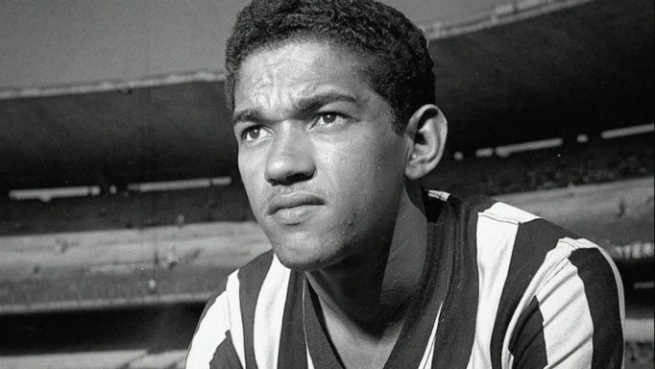
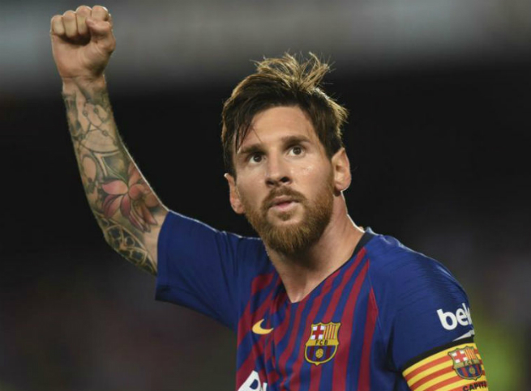
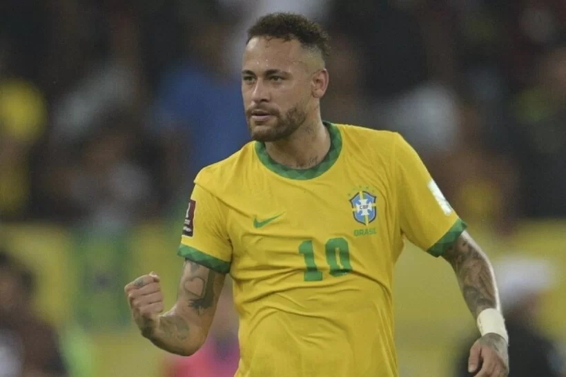
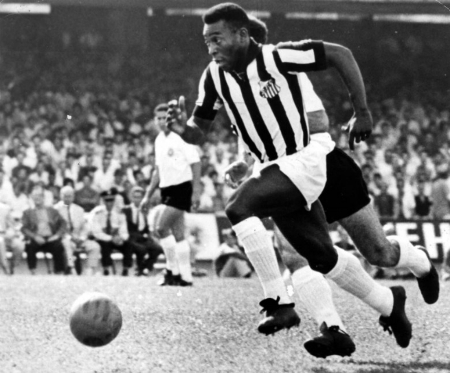
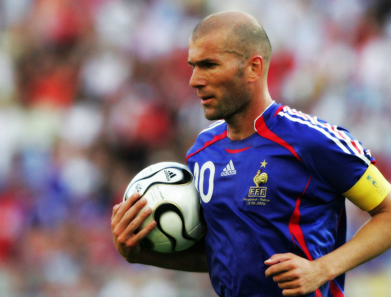
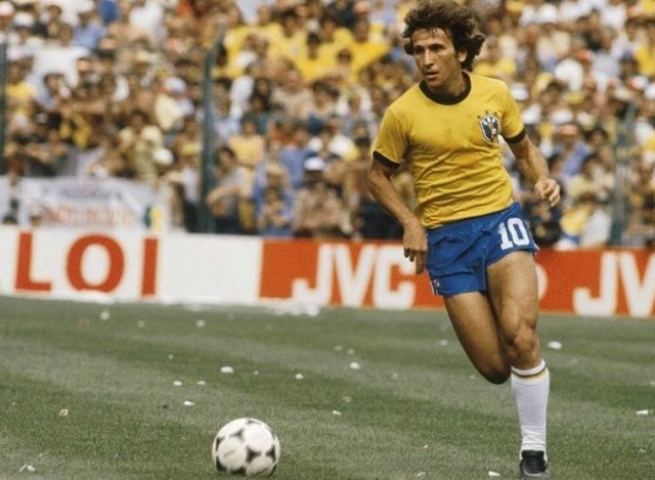

O português Cristiano Ronaldo é um dos maiores nomes do futebol contemporâneo (aliás, não seria exagero dizer que ele é O cara dos gramados nos últimos tempos). Nascido no Funchal, Cristiano é filho de pai jardineiro e mãe cozinheira. Logo seu talento foi descoberto na pequena ilha e, em 1995, o futuro astro foi contratado pelo Nacional.
Garrincha foi o apelido escolhido por Manuel Francisco dos Santos, um sujeito humilde que nasceu no interior do Estado do Rio de Janeiro, na cidade de Magé. Dos quinze irmãos, foi Garrincha que nasceu com um talento fora do normal para a bola.
Para não dizer que somos nacionalistas, essa lista tem que contemplar um grande atleta da seleção que é a nossa maior rival dentro dos campos, a Argentina. Lionel Andrés Messi Cuccittini - o famoso Messi - nasceu em Rosário, na Argentina, e começou a jogar aos sete anos de idade. De lá seguiu direto para o Barcelona, onde estreou em 2003.
Neymar é um importante jogador de futebol brasileiro. Com passagem histórica pelos clubes que atuou, o futebolista coleciona títulos e prêmios importantes. Por seu grande destaque, ele é considerado um dos maiores jogadores do mundo. Apesar da passagem por poucos clubes, Neymar acabou deixando sua marca por todos os clubes que atuou. Após atuar no futebol brasileiro pelo Santos de forma muito vitoriosa, ele alcançou grandes feitos e títulos europeus pelo Barcelona, jogando ao lado de grandes estrelas do futebol mundial, conquistando um grande patrimônio pessoal. Após deixar o Barcelona, Neymar foi para Paris Saint-Germain. Em suas atuações por diferentes clubes, joga comumente nas posições de ponta-esquerda e meia-atacante. Do mesmo modo, por ser um dos maiores jogadores nascidos no Brasil, ele acaba sendo uma das estrelas e um dos principais jogadores da Seleção brasileira.
O mais famoso jogador do Brasil ganhou o apelido de Rei ao encantar plateias mundo afora. Escolhido como o Atleta do Século, Edson Arantes do Nascimento nasceu na pequena cidade de Três Corações, em Minas Gerais, e saiu do interior para conquistar o título de Embaixador Mundial do Futebol.
Nascido no Rio Grande do Sul - como o próprio nome já dá pista (rs) - Ronaldinho estreou cedo no mundo da bola. Já aos sete anos começou a jogar no Grêmio Football Porto-Alegrense.
Se lembra de um dos nossos carrascos durante a Copa do Mundo de 1998? Foi Zinedine Yazid Zidane, um francês nascido em 23 de junho de 1972. Filho de imigrantes argelinos que migraram para Marselha, Zidane quando tinha apenas dez anos ingressou nas categorias de base do US Saint-Henri.
Estrela maior do futebol português, Eusébio da Silva Ferreira - que mais tarde veio a ser conhecido como Pantera Negra, Pérola Negra e King - nasceu em Maputo, Moçambique, quando o território ainda era uma colônia portuguesa. O jovem humilde era filho de um angolano que trabalhava com a construção de estradas.
